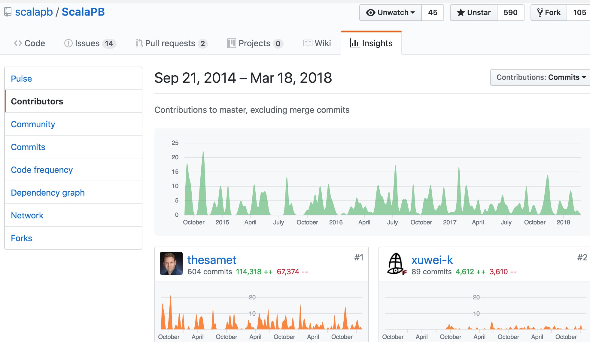

<DOCTYPE html>
<html>
  <head>
    <title>ScalaでgRPC</title>
    <meta http-equiv="Content-Type" content="text/html; charset=UTF-8"/>
    <style type="text/css">
      @import url(https://fonts.googleapis.com/css?family=Droid+Serif:400,700,400italic);
      @import url(https://fonts.googleapis.com/css?family=Ubuntu+Mono:400,700,400italic);

      body {
        font-family: Consolas, 'Liberation Mono', Menlo, Courier, monospace;
      }
      ul li ul li {
        font-size: 75%;
      }
      p {
        font-size: 150%;
      }
      li {
        font-size: 30px;
      }
      .remark-slide-content h1 {
        font-size: 70px;
      }
      .remark-slide-content h2 {
        font-size: 50px;
      }
      h1, h2, h3 {
        font-family: Consolas, 'Liberation Mono', Menlo, Courier, monospace;
        font-weight: normal;
        text-align: center;
      }
      img {
        max-width : 100%;
        max-height : 70%;
        display: block;
        margin-left: auto;
        margin-right: auto;
        border: 1px gray solid;
      }
      .remark-code, .remark-inline-code {
        font-size: 20px;
        font-family: Consolas, 'Liberation Mono', Menlo, Courier, monospace;
      }
      /* Two-column layout */
      .left-column {
        width: 50%;
        float: left;
      }
      .right-column {
        width: 45%;
        float: right;
      }
    </style>
  </head>
  <body>
    <textarea id="source">

class: center, middle

# ScalaでgRPC

ScalaMatsuri 2018

---
class: middle


- twitter [@xuwei_k](https://twitter.com/xuwei_k)
- github [@xuwei-k](https://github.com/xuwei-k)
- blog <https://xuwei-k.hatenablog.com>

---
class: middle, center

[Scala忍者](https://xuwei-k.hatenablog.com/entry/20170531/1496180871)

[未来から送られてきた関数型プログラミングロボット](https://xuwei-k.hatenablog.com/entry/20150919/1442669746)

---
class: middle

## [2017年のOSS活動](https://xuwei-k.hatenablog.com/entry/2017/12/31/105336)

- 出したpull request 825
- mergeされたpull request 750
- 4520 contributions

---
class: middle, center

gRPC公式サイト

# [grpc.io](https://grpc.io)


---
class: middle, center

## 2015年2月にGoogleが<br />発表したhttp2を使った<br />RPCフレームワーク

---
class: middle

- google内部ではstubbyという名前で<br />ずっと内部で使われているらしい
- stubbyをOSSとして作り直したのがgRPC

---
class: middle

## gRPC

- デフォルトでは protocol buffers が使われる
- 他のシリアライズ方式に差し替えることも可能
  - <span style="font-size: 80%;">だがそれほど使われていない？</span>

---
class: middle

## 公式対応言語

C++, Java, Python, Go, Ruby, C#, Node.js, Android, Objective-C, PHP

<span style="font-size: 50%;">PHPはクライアントのみ</span>

---
class: middle

## gRPCとは

- 公式では Scala は対応していない
- protocol buffers 自体に plugin があるので、それでコード生成をして対応できる
- 内部的には grpc-java を使っている
  - <span style="font-size: 90%;">grpc-javaの実装はnetty 4.1を使っている</span>

---
class: middle, center

protocol buffers の plugin

## [protocプラグインの書き方](https://qiita.com/yugui/items/87d00d77dee159e74886)

by @yugui さん

<span style="font-size: 60%;">yuguiさんは元googleでgrpc-gatewayなども作っておりとても詳しい</span>

---
class: middle

## [Protocol Buffersは遅いのか](https://qiita.com/tayama0324/items/499a5fed2a1c8479a5cf)

- 同僚
- 遅いかどうかの話じゃなく protocol buffers の特徴をうまく説明している?のでオススメ

---
class: middle

- <https://xuwei-k.github.io/scala-protobuf-docs/grpc>
- <https://github.com/xuwei-k/grpc-scala-sample>


---
class: middle

## Scalaでの使い方

---
class: middle

<https://github.com/scalapb/ScalaPB>

- Scalaでの protocol buffers のライブラリ
- gRPCにも対応している
  - <span style="font-size: 80%;">@xuwei-k が対応させました</span>

---
class: middle

たぶん3年連続くらいで2位

<a href="https://github.com/scalapb/ScalaPB/graphs/contributors" target="_blank">

</a>

---
class: middle

project/plugins.sbt

<pre>
<code class="scala hljs remark-code" style="font-size: 90%;">addSbtPlugin("com.thesamet" % "sbt-protoc" % "0.99.18")

libraryDependencies +=
  "com.thesamet.scalapb" %% "compilerplugin" % "0.7.1"
</code>
</pre>

---
class: middle

build.sbt

<pre>
<code class="scala hljs remark-code" style="font-size: 90%;">import scalapb.compiler.Version.{
  scalapbVersion,
  grpcJavaVersion
}

PB.targets in Compile ++= Seq(
  scalapb.gen() -> (sourceManaged in Compile).value
)

libraryDependencies ++= Seq(
  "io.grpc" % "grpc-netty" % grpcJavaVersion,
  "com.thesamet.scalapb" %% "scalapb-runtime-grpc" % scalapbVersion
)
</code>
</pre>

---
class: middle

## serviceの定義

<span style="font-size: 60%;">
<https://github.com/grpc/grpc-java/blob/v1.10.0/examples/src/main/proto/helloworld.proto>
</span>

```protobuf
message HelloRequest {
  string name = 1;
}

message HelloReply {
  string message = 1;
}

service Greeter {
  rpc SayHello (HelloRequest) returns (HelloReply) {}
}
```

---
class: middle

## Serverの実装

<span style="font-size: 60%;">
<https://github.com/xuwei-k/grpc-scala-sample/blob/a5d4fb9a952/grpc-scala/src/main/scala/io/grpc/examples/helloworld/HelloWorldServer.scala#L80-L81>
</span>

```scala
class GreeterImpl extends GreeterGrpc.Greeter {
  override def sayHello(req: HelloRequest): Future[HelloReply] = {
    val reply = HelloReply(message = "Hello " + req.name)
    Future.successful(reply)
  }
}
```

---
class: middle

- protobufでリクエスト、レスポンス、サービスを定義
- リクエストを引数にとって、Future[レスポンス] を返すメソッドを実装

---
class: middle

## Client

リクエストやレスポンスのパーサー的なものは実装の必要ない

<span style="font-size: 70%;">
<https://github.com/xuwei-k/grpc-scala-sample/blob/a5d4fb9a95/grpc-scala/src/main/scala/io/grpc/examples/helloworld/HelloWorldClient.scala>
</span>

---
class: middle

## clientのインスタンスの生成

```scala
val channel = ManagedChannelBuilder
  .forAddress(host, port)
  .build()
val blockingStub = GreeterGrpc.blockingStub(channel)
```

<span style="font-size: 50%;"><https://github.com/xuwei-k/grpc-scala-sample/blob/a5d4fb9a952c3e895e791b13786f8eb1681b6f65/grpc-scala/src/main/scala/io/grpc/examples/helloworld/HelloWorldClient.scala#L75-L77></span>

---
class: middle

## リクエストを作成して渡す

```scala
val request = HelloRequest(name)
val response = blockingStub.sayHello(request)
```

---
class: middle

## Javaとの違い

- unaryの場合は、StreamObserverは使用せずに、scalaのFutureを返すという規約にした
- その他の場合はJavaと似たような感じでStreamObserverを使用
  - <span style="font-size: 80%;">つまり必要以上に関数型な感じにはあえてしなかった</span>

---
class: middle

リクエストとレスポンスがそれぞれstreamか否か？<br />
で4種類ある

- Unary
- Server Streaming
- Client Streaming
- Bidirectional Streaming

---
class: middle

```protobuf
/* unary */
rpc hello(Req) returns (Res){}

/* server streaming */
rpc hello(Req) returns (stream Res){}

/* client streaming */
rpc hello(stream Req) returns (Res){}

/* bidirectional streaming */
rpc hello(stream Req) returns (stream Res){}
```

---
class: middle, center

[4種類の実装のサンプル](https://github.com/scalapb/ScalaPB/blob/5bfcaba725229308b7787f17f0a7eb4db994e5fb/e2e/src/main/scala/com/trueaccord/pb/Service1ScalaImpl.scala)

---
class: middle

## Unary

リクエストを1つ送るとレスポンス1つ返る


```scala
def hello(req: Req): Future[Res] = {
  // req: Req を使って Future[Res] を返す処理
}
```

---
class: middle

## Server Streaming 

リクエストを1つ送るとレスポンスがゼロ個以上の複数返る

<pre>
<code class="scala hljs remark-code" style="font-size: 90%;">def hello(request: Req, observer: StreamObserver[Res]): Unit = {
  // observer.onNext を0回以上複数回呼ぶ
}
</code>
</pre>

---
class: middle

## Client Streaming

リクエストを複数送ると、レスポンスが返る

```scala
def hello(observer: StreamObserver[Res]) =
  new StreamObserver[Req] {
    // onNext などを実装
  }
```

---
class: middle

## Bidirectional Streaming

リクエストを複数送ると、レスポンスが複数返る(?)

```scala
def hello(observer: StreamObserver[Res]) =
  new StreamObserver[Req] {
    // onNext などを実装
  }
```

---
class: middle, center

無理してstream使わずに、どうしても必要でない限りunaryだけで良い気がする
(個人の感想)

---
class: middle, center

server streaming使うと、たしかにサーバーからのpushが簡単にかけそう・・・？

---
class: middle

- bidirectionalはエラー処理や状態を考えると、かえって色々自由すぎて面倒・・・？
- 誰か良いユースケースがあったら逆に教えて欲しい

---
class: middle

質問コーナーや、ライブコーディング

    </textarea>
    <script src="https://gnab.github.io/remark/downloads/remark-0.14.0.min.js" type="text/javascript"></script>
    <script src="https://ajax.googleapis.com/ajax/libs/jquery/3.2.1/jquery.min.js"></script>
    <script type="text/javascript">
      var slideshow = remark.create({
        highlightStyle: "railscasts"
      });
      slideshow.on('beforeShowSlide', function (slide) {
        $("a[href^='http://']").attr("target", "_blank");
        $("a[href^='https://']").attr("target", "_blank");
      });
    </script>
  </body>
</html>
